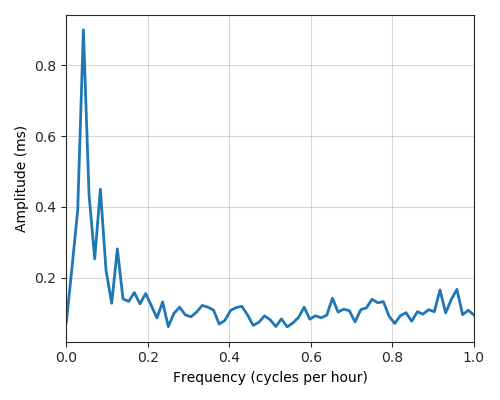
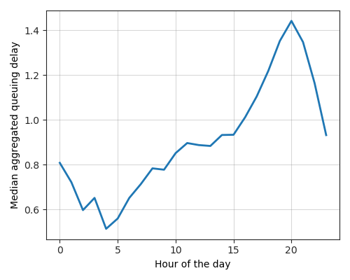

---
layout: default
title: Last-mile delay survey / 2018-06-01 / AS13156
---
AS13156, AS13156 Palmela, PT
Summary
- Daily last-mile fluctuations: low
- Number of probes: 3
- APNIC eyeball rank: 1087
- Daily fluctuations: True
- Main frequency: 0.0417
- Average peak-to-peak amplitude: 0.90ms
Aggregated last-mile queuing delay
Periodogram

24H profile

Probes' last-mile RTT